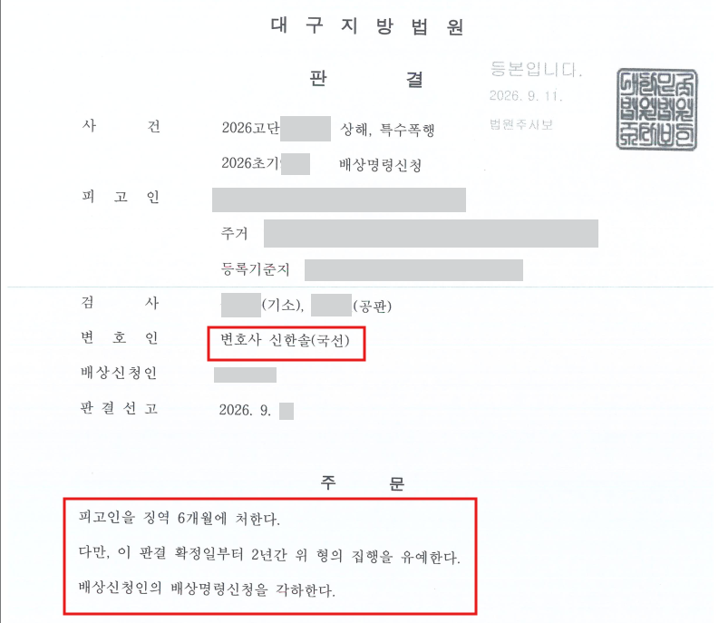

이 사건은 신한솔 변호사에게 국선변호로 배정된 형사사건이었습니다. 피고인은 술집에서 피해자와 시비가 붙자 피해자 쪽으로 소주병을 던지고, 이어 멱살을 잡아 넘어뜨려 약 21일간의 치료가 필요한 상해를 입힌 혐의로 기소되었습니다.
그런데 피고인이 법원에 제출한 의견서에는 술병을 바닥으로 던졌고, 피해자와도 함께 넘어진 것이라는 취지의 일부 부인 주장이 적혀 있었습니다.
증거기록과 CCTV를 확인한 결과 그대로 유지하기 어려운 주장이었으므로, 신한솔 변호사는 객관적인 증거와 맞지 않는 부인 주장을 철회하고 공소사실을 인정하는 방향으로 입장을 정리했습니다.
공소사실을 인정한다고 해서 불리한 법적 평가까지 모두 받아들일 필요는 없었습니다.
첫 재판에서 재판부는 소주병 투척과 이후의 상해행위를 하나의 연속된 공격으로 보아 특수상해로 평가할 수 있지 않은지 검사와 변호인에게 의견을 물었습니다.
신한솔 변호사는 소주병을 던진 행위와 이후 멱살을 잡아 넘어뜨린 행위 사이에 시간적·행위적 구분이 있으므로, 두 행위를 하나의 특수상해로 평가하기는 어렵다는 의견을 밝혔습니다.
이후 검사는 오히려 소주병 투척에 의한 특수폭행과 그 뒤의 일반 상해를 명확히 구분하는 방향으로 공소장을 변경했고, 최종 판결 역시 두 범죄를 별도로 판단했습니다.
피고인에게 폭력범죄 처벌전력이 없고 상해 정도도 약 3주였으므로, 피해회복이 이루어진다면 집행유예를 충분히 기대할 수 있는 사건이었습니다.
신한솔 변호사는 피고인이 피해회복 자금을 마련할 수 있도록 법원에 시간을 요청했고, 약 두 달의 추가 기일을 확보했습니다.
그러나 그 사이 피해자는 엄벌탄원서와 배상명령신청을 제출했고, 법원을 통해 다시 확인한 합의 의사도 거절했습니다.
이에 합의를 계속 시도하기보다는 형사공탁으로 방향을 바꾸어 370만 원을 공탁했습니다. 피해자는 공탁금 수령 의사를 밝혔고, 법원도 이를 피해가 일부 회복된 사정으로 양형에 반영했습니다.
대구지방법원은 피고인에게 징역 6개월을 선고하되 그 집행을 2년간 유예했습니다.
재판부는 위험한 물건을 이용해 폭행하고 이후 상해까지 입힌 점을 불리하게 보면서도, 피고인이 범행을 인정한 점, 370만 원을 공탁하고 피해자가 수령 의사를 밝힌 점, 폭력범죄 처벌전력이 없는 점 등을 함께 참작했습니다.
피해자가 신청한 배상명령에 대해서도 변호인은 배상책임의 범위가 명확하지 않다는 취지로 각하를 요청했고, 법원은 이를 받아들여 배상명령신청을 각하했습니다. 검사는 항소하지 않았습니다.
개인정보와 사건번호 일부를 비식별 처리한 판결문 일부입니다.

특수폭행·특수상해 사건에서 사실관계를 어디까지 인정해야 할지,
피해자와의 합의나 형사공탁을 어떻게 진행해야 할지 고민하고 계십니까.
변호사 논평
이 사건에서 특별한 무죄 법리를 찾아낸 것은 아닙니다. 다만 인정사건에서는 접어야 할 주장은 접고, 다퉈야 할 법적 평가는 다투며, 피해회복을 실제로 끝까지 진행하는 조율이 중요합니다. 별것 아닌 일처럼 보이지만, 바로 그 기본적인 대응이 어긋나 사건이 불필요하게 꼬이는 경우도 적지 않습니다.